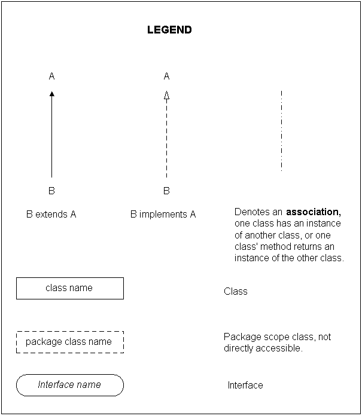

| RIM Crypto API: Getting Started |
This lesson provides a quick introduction to the RIM Crypto API and explains some of the important concepts used in it. We also attempt to answer the beginner's most common questions. For more detailed information, please see the other lessons with the specific question you have in mind.
The first part of this lesson consists of a general introduction to the structure of the Crypto API. Below you will find the major sections that are encompassed by the API. Along with each of these are diagrams and explanations of how the components fit together in their appropriate sections.
The major components of the API are:

Keys provide the security for most if not all of the cryptographic applications in existence today. With that thought in mind, the creation, handling, and storage of keys is a fundamental requirement of any cryptographic API. In this tutorial we will describe how keys are created, handled, and stored. Additionally, this lesson discusses how to use Certificates, CryptoSystems, and KeyStores. The entire lesson can be found here.

Encoding public and private keys provides a convenient, consistent method for packaging and transmitting these keys, including any other required parameters. In other words, if the package format is agreed upon, transmitting keys from one application to another, or one location to another, becomes a simple matter. Read the entire tutorial on key encoding and decoding here.

Digests and MACs provide incredibly useful and important functions in the Crypto API. A digest can be used as a secure hash function to "shrink" down a large amount of data into a small, unique identifier. A MAC, or Message Authentication Code, is used to verify that the information passed through the MAC has not been changed or modified. It is essentially a keyed hash function. The use of this key and a secure hash function ensures that data is not modified without permission. This component provides the concept of data integrity.
There is an entire lesson devoted to using digests and MACs that can be found here.

Signatures provide a way for verifying data origin authentication and identity authentication. That is, we can use signatures to be sure that a message could have only come from a certain entity. Signatures are typically only used with a public/private key scheme. The private key is used to "prove" to others that only that entity could have signed the information. This assumes that only the entity knows the private key. This is a very important concept.
Again, signatures have an entire lesson devoted to usage and the different signatures available that can be found here.
Encoding and Decoding Signatures

Signature encoding provides the same benefits as key encoding. A signature signed and encoded in a given format can be read and verified by anyone who knows the format and the algorithm. Transmission and verification of multiple encoding formats and algorithms becomes simple once the package format is agreed upon. Encoding signatures is dealt with in the Signature tutorial.

The EncryptorOutputStream diagram that is shown above describes the framework involved in encrypting data using the Crypto API. As you can see, the API is very flexible giving developers the option to encrypt either streams or blocks of data.
All of the engines and encryptors using streams are explained in the block cipher lesson of this tutorial. See it here.

Similar to how the encrypting data portion was explained (see here for details), the API provides the ability to directly or indirectly decrypt data. Directly, one can use the engines to decrypt the data, but this becomes more complicated when padding and other features are used. Indirectly, one can use the DecryptorInputStream to perform all of this automatically.
All of the engines and decryptors using streams are explained in the block cipher lesson of this tutorial. See it here.
Random and Pseudo Random Sources

RandomSource provides a cryptographically secure source of randomness suitable for key generation. Randomness is frequently harvested from several device sources and pooled. An example of using RandomSource can be found in the code for the Digest and MAC tutorial.
PseudoRandomSource provides an arbitrarily long sequence of random looking bytes from a finite seed. It is typically used to create the keystream of a stream cipher. The FIPS186PseudoRandomSource implements the pseudo-random number generator (PRNG) specified in FIPS186. This is used in the Crypto API to generate random numbers for DSA. See Stream Ciphers for examples using PseudoRandomSource.

Exceptions are very simple. The two main exceptions are CryptoException and CryptoIOException. A CryptoException (and its subclasses) will occur when any errors occur during most uses of the Crypto API. Some of the exceptions clearly show what error caused that exception to be thrown. The CryptoException will always be the general exception thrown when one of the specific subclasses does not suit the error.
The CryptoIOException is an IOException that contains a CryptoException. Some stream related classes, e.g. EncryptorOutputStream, can only throw an IOException. If a CryptoException is raised, it is wrapped inside a CryptoIOException and rethrown.
Understanding exceptions
Any logic errors in your code which are not detected at compile time, will cause the program to fail during runtime. To prevent this, the Java programming language incorporates exceptions. Exceptions occur or are “thrown” when an error occurs during runtime. These exceptions must be caught by encasing your code within a try and catch complex. This way, if an error occurs during a particular code segment, it can be caught or trapped and dealt with, while allowing the adjacent code to continue executing.
While exceptions are an important part of programming in Java, a more detailed discussion of them is outside the scope of this document. Below is a description of the exceptions common to the Crypto API. The crypto API contains two main exception classes: CryptoException and CryptoIOException. A CryptoException (and its subclasses) occurs when an error is encountered by a member of the crypto API. The exceptions contain a toString method that allows you to output a string containing a description of the error.
In most examples, the exceptions are used to output the error text to the console of the BlackBerry JDE. For example, the following lines output the string associated with the exception to the console. This way, when the program executes and the desired output is not achieved, you can check the log to determine if an exception was thrown.
try
{
//*Crypto Body
} catch( IOException e ) {
System.out.println(e.toString());
} catch( CryptoTokenException e ) {
System.out.println(e.toString());
}
The crypto code is encased within a try structure. This allows each exception to be “caught” by the exception handler. Most of the exceptions show a description of the error caused that exception to be thrown. The CryptoException is the default exception and thrown when one of the specific subclasses does not suit the error. Examples of crypto exceptions are InvalidKeyPairException, InvalidKeyFormatException and InvalidSignatureFormatException.
The CryptoIOException is a unique exception in that it is only thrown when an IOException has occurred within a crypto member. For example, if an error occurs and an IOException is thrown within an EncryptorOutputStream, a CryptoIOException will be thrown instead of the IOException. The CryptoIOException is then handled separately from the IOException, to allow you to debug your crypto applications with greater ease.
For more information on the CryptoException and the CryptoIOException, see the Javadocs.